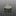
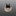

現役酒精爐
以下介紹阿前購買的與自製的酒精爐類型，一些DIY的辛酸血淚史(誤。還有其他買過太爛丟掉的，或DIY沒拍照做失敗品就丟了就沒放了。
索引
蝦皮手工酒精爐 (內旋風毛細酒精爐) #毛細管道 網路購買
阿前第一個入手，也是最常帶上山的酒精爐，此款酒精爐燃燒效率高，製作要求也較高，不如買現成的來燒！
中間開口點火即可預熱酒精並快速啟動，透過凹折毛細管壁向小孔噴發，噴發時連帶搶走中心火焰，達到只有小孔噴火的效果。
內層粉紅色是因為一開始是買五金行工業酒精（甲醇）來燒導致染色，甲醇有毒！燒起來燻眼睛！不推薦燒甲醇！


賣場搜尋：輕量化酒精爐、旋風酒精爐、毛細酒精爐，或以圖搜圖找類似的產品。
看 YouTube頻道 Lifestyle C.C Land 入坑，上淘寶買對應的材料包製作。
內層捲上防火棉，讓酒精揮發速率降低，達到延長燃燒時間的效果。
此款酒精爐很方便自製，只要買得到對應的材料的話。


賣場搜尋：小島酒精爐，防火棉酒精爐，或以圖搜圖找類似的產品。
也可以買類似的材料自製，詳情可以看爐心材料測試。
罐頭酒精爐 (墊高可燒異丙醇) #開放式 ＤＩＹ 🛠️簡易
嘗試使用罐頭製作一般的貓罐酒精爐，此款設計可不用爐架，鍋子直接疊上去也可燃燒。非常好DIY的爐子。
沒額外的包覆式爐架，爐體火焰外露較怕風，更需要擋風板。
注意第一次燃燒罐頭外壁的漆被燒掉時要離遠一點，感覺有毒。

後來嘗試使用異丙醇燃燒容易黑鍋，又在網路上查到有款 IsoClean 異丙醇酒精爐可以燒異丙醇的時候極大程度的不黑鍋，但打孔的設計與貓罐酒精爐非常的類似，發現原來只要讓火焰口與鍋底維持1.2cm左右的高度，即可達到類似效果。
具體原理應該是火焰層流穩定，與空氣混合比較佳，所以才可以燃燒較完全（就不容易黑鍋），但燃燒效率稍微降低，燃燒時間更長；好似上方疊超密的鐵網讓火焰通過的時候可以跟空氣更好混和也有類似效果。
IsoClean (後來改名為Multi-Fuel，因為其實也可以燒別的燃料)的製作流程影片：How we make the Multi-Fuel stove by FLAT CAT GEAR
自帶爐架的改良版 #開放式 ＤＩＹ 🛠️進階
為了達到IsoClean自帶爐架可燃燒異丙醇減少黑鍋的效果，嘗試綁上螺絲當作爐架，但放置在內外差異非常大！
改良失敗 放置在爐子內，螺絲因受火加熱，間接導致異丙醇加熱沸騰，讓異丙醇蒸氣過度膨脹，反而由進氣孔噴發火焰，空氣沒辦法透過進氣孔進氣維持完全燃燒，導致黃火黑鍋！

改良成功 調整到綁在外圍，終於出現較平穩的藍色火焰，有帶一些部分黃火，但還可以接受，燒完水後鍋子僅有邊緣稍微黑鍋；應該也可以再嘗試縮短螺絲高度。


UCC184ML雙層酒精爐 #雙層加壓 ＤＩＹ 🛠️進階
簡易製作的雙層酒精爐。一樣利用兩個鋁罐製作而成，內層爐壁利用鋁罐底凹槽圈的特性卡住隔出雙層空間。
製作上要注意底部擴張要確實，與如果要推到很底，頂部預留的空間最好還是預折/剪一圈，以符合底部弧度（或是底部找全平底罐子製作）。
這裡有教學：Make Soda Can Alcohol Stoves - No Glue & Instant Use & Easy Light

UCC184ML毛細酒精爐II #毛細管道 ＤＩＹ 🛠️進階
跟UCC184ML毛細酒精爐一樣的做法，只不過不用鋁箔膠帶去封那個縫隙了，而是直接將外圍往內折蓋住縫隙。內緣也不特地封起來，燒起來也還可以。
熟能生巧，做得更好看了點，火焰效果也不錯，啟動時間也快，體感約15秒。


改用冰箱內的冰水(大約10度)來測試，25ml乙醇煮500ml的水，9分鐘底部產生許多氣泡，微滾而已沒大滾，約9分半熄滅，還是須注意水溫高低影響沸騰時間的問題。
這次使用直徑約10cm的杯子搭配擋風板，火焰竄很高，把手有點燙手，須小心。
打磨可樂200ML毛細酒精爐 #毛細管道 ＤＩＹ 🛠️進階
參考這個教學製作而成：易拉罐螺旋火焰出火增压酒精炉制作教程，把外壁、內毛細管壁、噴焰孔拆成三個部件，打洞與組裝比較方便一些。
不知道改用罐頂當作管壁，上面一圈額外的金屬環結構上有沒有影響，又或者三個部件組裝的中空較多，使得整體更偏向雙層加壓結構，啟動時間比UCC184ML毛細酒精爐II慢了一點（大約30多秒）。
也是大火力類型的爐子，感覺應該要用寬一點的鍋才能完整利用到熱能。

這次特地凹折孔洞形狀讓他有點螺旋感

UCC+牛奶花生+薑汁汽水酒精爐 #雙層加壓 ＤＩＹ 🛠️簡易
與內爐壁打孔毛細酒精爐一樣是打孔在內側，只不過這次是純粹的雙層加壓式。
使用UCC Black 274ml的罐口當內壁，牛奶花生鐵罐上半部當接合組裝用的殼層壁，薑汁汽水罐當容器與裝飾壁(測試時原本使用雪碧罐，後來覺得薑汁汽水更漂亮換上)。鐵罐讓組裝上不容易扭曲，周圍縫隙用鋁箔膠帶貼一圈密封。
搭配X型支架燃燒限制在杯緣的效果不錯。

搭配包圍式爐架火焰竄出來燒到把手的問題，把它往內推一點，留多一點空間在靠手把處即可。


咕嚕康普茶加蓋波浪爐 #套筒式 ＤＩＹ 🛠️簡易
直接讓毛細壁外露當作燃燒孔，還可以直接把杯子疊在上方，進一步達成封閉加壓式的效果，省去爐架。
因為外露孔洞特多，點火起來之後會快速燃燒起來，有點可怕，風大的時候要超級小心，這時就要快點疊杯子鍋子上去幫助穩定火焰輸出了。


伯朗240ML燈芯酒精爐 #燈芯式 ＤＩＹ 🛠️進階
類似酒精燈，有燈芯在中央的設計，重點設計在燈芯用一個鋁罐側邊斜剪一片鋁片捲著棉心包覆，並且不能捲太緊，讓他有一些額外空隙可以應用毛細現象與加熱氣化酒精的通道，鋁片還可以傳導熱能到底下幫助酒精氣化。
燈芯外面一圈打孔，除了讓酒精更好填裝之外，在加熱後期氣化壓力提高後，可以轉化為封閉加壓式的燃燒孔，取代燈芯燃燒。
實測約10~12ml左右乙醇8分多鐘可以燒開200ml的常溫水，並且燒了20分鐘左右才結束，效率與燃燒面積都很適合小杯子使用。


OOHA半邊酒精爐 #毛細管道 ＤＩＹ 🛠️進階
避免燒到杯子手柄，只開半邊的孔。孔開在外側也方便直接架杯子。


CupiFlame(小杯用鋁盒爐組) #毛細管道 ＤＩＹ 🛠️進階
幫爐子取了一個俏皮的名字😆
輕巧化給小杯煮水用，做一個可以塞進鋁盒中的爐體，並且搭配專用爐架，直接收納在鋁盒中。
不過爐架佔據了一定空間，需要比較持續的火源去點燃，用電弧打火機不容易點著，可能之後再看能不能再多打些孔洞增加空氣接觸面積。

整體展開內容物：

爐架可以完全收納進盒子中：

燃燒起來的感覺。杯子架上爐架後火焰比較穩定。
舊的爐架設計太矮，跟鍋底距離太近，沒有足夠空氣可以維持燃燒，燃燒速率很慢外，很容易熄滅。額外架高後才能維持穩定火焰
雖然說製作方法類似毛細爐要壓褶痕，但摺痕很粗，管道只是單純的酒精氣化管道，實際上已經類似封閉加壓爐了。鐵罐可以兼當爐架與穩定燃燒速率。而且這種摺痕套筒類型的爐體啟動較快，不容易遇到熄火問題。
有8個摺痕管道。


UCC274ML瓶口爐 #雙層加壓 ＤＩＹ 🛠️進階
利用UCC274ML瓶口當作內壁的爐子，外層使用咕嚕康普茶鋁罐。很普通中規中局的爐子。

打磨可樂200ML罐底直扣酒精爐 #雙層加壓 ＤＩＹ 🛠️進階
UCC274ML+烏龍茶320ML罐底直扣酒精爐的縮小重製版，外環腔室縮小後，預熱時間減短到1分鐘，變得更可用些。
這個爐體作法可以很安全的接合爐體，不太容易歪來歪去壓壞鋁罐，點這裡看教學。
UCC274ML罐底直扣封蓋酒精爐 #毛細管道 ＤＩＹ 🛠️進階
使用罐底直扣製程，但是中心挖圈更大。
多一個蓋子可在周圍燃燒孔啟動完畢後封閉中心，節省中心酒精燃燒氣化並增加燃燒孔噴射壓力。
封蓋後中心燃燒減緩；蓋子的鐵絲被燒得紅透，須避免觸碰。
伯朗拿鐵240ML側燒酒精爐 #毛細管道 ＤＩＹ 🛠️進階
保留了伯朗拿鐵鋁罐上下金邊紋路，並且紋路方便打孔對齊，側打孔保留一公分高作為免爐架設計。
側邊製作不小心弄得有縫隙的關係，點火初期會有點漏燒。
使用可樂330ML罐底當作內壁的鑲嵌凹槽與挖噴射孔位置。
雖然需要一分鐘才能啟動，但燃燒火焰集中在中心，流量穩定，燒在杯子上不浪費任何火力，5分25秒可煮開常溫水。
套筒火山爐 #套筒式 ＤＩＹ 🛠️簡易
比起火山爐期望盡量都透過瓶口噴射，此款更主要是希望由側邊套筒部分當作主燃燒位置。
下半部打孔起到點火順利，與煙囪爐形式的對流作用。
上面瓶口打孔則是使得後期火焰燃燒更順暢。
雖然是套筒式，但因為瓶口太窄還是需要爐架。整體火焰適合寬鍋，有意思的是直到燃燒的末段火焰都可以好好的覆蓋鍋底。
主燃燒與末端燃燒火焰的變化。主燃燒由酒精於環形區域氣化燃燒主導；末端燃燒時，則可以看到煙囪效應主導，加上火山錐形狀的設計，使得火焰最後還是可以收束並噴發。
伯朗拿鐵240ML罐底直扣內旋風毛細酒精爐 #毛細管道 ＤＩＹ 🛠️進階
與打磨可樂200ML毛細酒精爐一樣的設計，差異在孔數較多、孔徑較小。
罐子很多，做個漂亮的內旋風毛細酒精爐，伯朗拿鐵的金邊裝飾可以拿來參考摺痕與打洞距離，剛好打了12個孔。
鬆餅陶纖爐 #吸附式 ＤＩＹ 🛠️簡易
用鋁罐製成的陶瓷纖維爐，使用不鏽鋼網固定，扁扁的身形取名跟Pancake Lens借鏡。
鋼絲絨自動煮飯爐 #吸附式 ＤＩＹ 🛠️簡易
參考這個教學製成：【自作アルスト】自動炊飯に特化型！火加減が自動で変わる。作り方公開。メスティン。ポケットストーブ。
順便做一些修改，如側邊溝槽新增三個漏水孔幫助酒精流入內部（缺點是沒辦法透過溝槽快速預熱所以不一定要打洞），中間壓凹讓酒精集中倒入
火焰會從一開始的大火，慢慢轉變成中間燃燒的中小火，符合自動煮飯的火力曲線，雖然沒有實際試過煮飯效果，但搭配25ml的80%甲醇煮開400ml常溫水，耗時15分才大滾，約21分鐘才燒完。

鋁盒陶纖爐 #吸附式 ＤＩＹ 🛠️簡易
鋁盒塞入陶瓷纖維棉，使用不鏽鋼網固定。
噴射引擎爐 #雙層加壓 ＤＩＹ 🛠️進階
外觀很有科幻噴射引擎噴射孔的感覺，故取此名，實際上並沒有比較會噴。
使用維大力罐子與UCC184ML罐子製成，在外環凹槽打了32個孔，內層墊入廚房紙巾當作吸附材，但效果好像沒陶瓷纖維或一次性毛巾好，主要還是以酒精升溫氣化的方式啟動，啟動太慢也導致初次點火有熄火的機會。
原本預期32個開孔外加大尺寸火焰會很大，結果貌似因為打在凹槽內、孔徑較小、加上雙層壁內空間較大酒精氣化較慢的關係，實際火焰並不如想像的大。
20ML的綠焰精靈煮開300ML室溫水，約5分多鐘沸騰，總燃燒時間約7~8分鐘。

53波浪爐 #毛細管道 ＤＩＹ 🛠️簡易
UCC184ML內層+咕嚕康普茶外層組合的波浪套筒爐。
白魔爪波浪爐一樣的製程，但尺寸更小、高度更矮更容易點燃，保留了上緣金屬環，更加穩固美觀。
ARIZONA爐 #雙層加壓 ＤＩＹ 🛠️進階
ARIZONA低糖綠茶鋁罐製成，尺寸巨大。
ArPoten迷你側燒爐 #雙層加壓 ＤＩＹ 🛠️簡易
DAESANG Wellife ArPoten Energy Shot 能量飲料 100ml鋁罐製成，尺寸迷你。
內層直接用瓶子上半部倒扣進去，加工方便。
側邊燃燒孔火焰向外噴發，直接架上杯子的效果比使用爐架的效果更好。
綠魔爪罐底直扣爐 #雙層加壓 ＤＩＹ 🛠️進階
外層與燃燒孔蓋用綠魔爪、內層使用UCC 184ML罐子。
本來也想做旋轉火焰但可能外腔壓力不夠大效果不太明顯。
綠魔爪波浪爐II #毛細管道 ＤＩＹ 🛠️簡易
綠魔爪波浪爐類似的製程，重點在於減低了高度，點火比較不容易熄滅。燃燒孔高度比第一版還多一點，燃燒效率也會再好一些。
雖然已經有摺痕了，還是嘗試在中間加上額外的內壁(使用UCC184ML罐體)，啟動時間好像有微微變慢，但沒有影響燃燒效率，也不確定多一層壁有沒有增加額外的效益，但外表看起來更美觀。
20ML的80%乙醇，約7~8分鐘內可以煮開400ML的常溫水(大滾)，還有餘火可以幫冷茶重新加溫。
ArPoten迷你內打孔爐 #雙層加壓 ＤＩＹ 🛠️簡易
DAESANG Wellife ArPoten Energy Shot 能量飲料 100ml鋁罐製成，尺寸迷你。
內層直接用瓶子上半部倒扣進去，加工方便(有稍微將瓶口修矮)。
使用20~25ml約75%消毒酒精，煮300ml的室溫水，7分半水滾，放著加水繼續滾約13分燒完。
扁扁陶纖爐 #吸附式 ＤＩＹ 🛠️簡易
身形扁，洞口也扁，謂之扁扁。
底部用韋恩咖啡鐵罐、上蓋用UCC184ML鋁罐，中間塞入陶瓷纖維。
火焰燃燒由小漸大，再慢慢轉小。
使用15ml 99%乙醇，使用小杯子小三角爐架，煮約250ml的常溫水，7分半水滾，放著加水繼續滾快15分燒完。有效火焰其實夠長，應該有機會可以燒開400ml的常溫水。
小圓孔陶纖爐 #吸附式 ＤＩＹ 🛠️簡易
利用縮小孔徑控制火焰大小與燃燒時長。
嘗試過14mm左右大小，但不知是否因測試時沒使用99%乙醇的關係，火焰超級小，完全煮不開水只能當作保溫用，最後改成孔徑22mm，也許再找時間重新測試18mm左右的效果。
使用兩個用UCC184ML鋁罐的罐底，底部墊入一次性毛巾，上層墊入陶瓷纖維。
火焰燃燒由小漸大，再慢慢轉小。
使用15ml 99%乙醇，使用小杯子小三角爐架，煮約300ml的常溫水，10分半水滾，20分鐘後轉小火，22分鐘後結束有效燃燒時間，總燃燒時長來到24分鐘。

小小圓孔棉爐 #吸附式 ＤＩＹ 🛠️簡易
與小圓孔陶纖爐一樣工法，改用一次性毛巾當作吸附材，孔徑只有15mm左右大小。
小孔是為了拿來溫茶用，但酒精量需要控制。
使用99%酒精燃燒，火焰會有小轉大再轉小的跡象，中間大火多大取決於酒精量，量夠多變成也能煮開水。
酒精量太多火焰會太旺：
UCC184ML硬幣爐Remake #封閉加壓 ＤＩＹ 🛠️進階
重製UCC184ML硬幣酒精爐，孔洞更小，且打在最上緣火焰會比打在外側收斂一點。
一開始預熱掌握好的話後續蠻省酒精的，最大容量約30ml。
ArPoten隱形皇冠爐 #雙層加壓 ＤＩＹ 🛠️簡易
DAESANG Wellife ArPoten Energy Shot 能量飲料 100ml鋁罐製成，尺寸迷你。
內層裡用瓶子上半部倒扣，剪裁成類似皇冠的形狀，由缺口燃燒酒精。
但與ArPoten迷你內打孔爐相比其實沒有太大的優勢。
矮波浪爐 #毛細管道 ＤＩＹ 🛠️簡易
燃燒區域過短，不容易維持汽化溫度因而不太能直接架鍋具，但毛細類型的酒精爐可快速啟動的特性，搭配小三角爐架使用還是蠻實在的。
１２：６孔雙層煙囪爐 #雙層煙囪 ＤＩＹ 🛠️進階
１６：８孔雙層煙囪爐類似的做法，差別在於底部加墊一圈定位環(使用53MM寬度瓶子口)避免滑動，但重量就加了一些。
孔洞設計，外壁底部打12個孔，內側頂部打了6個孔，為了更方便與穩定的燃燒75%酒精而新配置的孔洞數。
使用UCC274ML瓶口與兩個UUC184ML接合，瓶口接合的部分使用鑄工膠固定與填滿縫隙避免滲漏。蓋上蓋子後可短期存放多餘的酒精，就不一定要讓酒精全部燒完。
因為高度高且瓶口窄，合併使用波浪摺痕技法與雙層加壓壁，只能用高濃度酒精，且要用火柴、或棉花棒沾酒精，燃燒內壁頂端一段時間等待啟動。
波浪摺痕可以增加毛細/虹吸現象，快速啟動燃燒，初期會以毛細管道方式燃燒；燃燒一段時間外層腔體內溫度升高開始汽化則會改由雙層加壓主導。
使用20ML 99%乙醇燃燒300ML常溫水，約10分鐘水滾，整個燒完約20分鐘，意外的很省燃料。後續做新的內壁結構置換後重燒測試，15ML99%乙醇在6分鐘時大火，總時長也是燒了15分鐘，沒有太大改變。
不過因為鑄工膠膠合很難完全1:1的完全混合，初幾次燃燒時一些殘留物還是會產生黃火並造成黑鍋，並且燃燒完畢後內可以洗出灰灰的水，內壁也黏黏的。
但好在內壁不是黏死結構而是單純捲進去而已，做新的內壁結構置換後，燃燒就比較正常沒有太多黃火了。不過長期密封性尚待驗證。
後續新增滅火蓋，黏貼鐵片與磁鐵來吸附（發現薄片磁鐵不夠力，所以底部也額外吸上另一顆磁鐵）：
UCC密封罐爐二代目 #毛細管道 ＤＩＹ 🛠️進階
與UCC密封罐爐一樣作法。差異在沒有額外打外圈孔，純粹靠波浪摺痕噴發。重量的差異主要來自於波浪摺痕有多少層。
大約250ML常溫水10分鐘滾，因為水滾就可以使用滅火蓋熄火，就不特別計算燒完的時間了。
製作時改用了4分鐘就會基本凝結的AB膠，太快凝固很難作完美的塑形，密封性不夠用水檢測一直漏水就一直補強。所以縫隙那圈特別粗有點醜。
UCC密封罐爐三代目 #毛細管道 ＤＩＹ 🛠️進階
與UCC密封罐爐一樣作法。差異在沒有額外打外圈孔，純粹靠波浪摺痕噴發。重量的差異主要來自於波浪摺痕有多少層。
大約300ML常溫水13分鐘滾，因為水滾就可以使用滅火蓋熄火，就不特別計算燒完的時間了。
改回蝦皮隨便買的流動性較高的AB膠來接合，但一波三折。
先是接合罐子外罐出現摺痕縫隙，導致也會漏水，想說內側底部整個也用AB膠補強，但發現AB膠遇到高溫酒精會融化黏黏的，火焰燃燒也會黃火黑鍋。
於是拆掉塗滿AB膠的底罐，重拿新的罐子，改用4分鐘AB膠預先塗在接合的內外壁處，避免底部整個都是膠。
ArPoten小密封罐爐 #毛細管道 ＤＩＹ 🛠️進階
比起UCC密封罐爐用多個罐體制做，這個只需要同一個罐體上半與底部用耐高溫AB膠接合即可。
火焰更小，方便用在更小的爐具與溫茶、溫咖啡用。
但因為有外圍打孔增加火焰面積，煮久了水還是會滾，約350ML的常溫水，26分滾。
ArPoten小密封罐爐二代目 #毛細管道 ＤＩＹ 🛠️進階
ArPoten小密封罐爐一樣製程，差在沒有外圍打孔。
火焰更小，方便用在更小的爐具與溫茶、溫咖啡用。
本來以為沒有外打孔就不會滾了，結果早上溫咖啡時，拿稍微退冰一點的240ML咖啡煮一樣可以16分鐘微滾。
Fancy Feast Stove #套筒式 #吸附式 ＤＩＹ 🛠️簡易
如這個影片的Fancy Feast Stove - Boil Test #1概念製作而成（原本是用Fancy Feast貓罐製作所以得名）。
使用330ML雪碧與184MLUCC咖啡套接而成；免爐架設計，外圍厚實防火綿更好倒與點燃酒精（若只從中間倒酒精，酒精所使用的量，需要足以被吸附到頂端可被燃燒）。
約500ML常溫水9分鐘水滾。